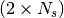

1. Description of the propagation environment¶
The Layout class contains the data structure for describing an Indoor environment. It contains data structures necessary for the graph based ray tracing implemented in PyLayers. The class is implemented in the `layout.py <http://pylayers.github.io/pylayers/modules/pylayers.gis.layout.html>`__ module
from pylayers.gis.layout import *
from IPython.display import Image
import os
%matplotlib inline
WARNING:traits.has_traits:DEPRECATED: traits.has_traits.wrapped_class, 'the 'implements' class advisor has been deprecated. Use the 'provides' class decorator.
1.1. Getting the list of all available Layouts : the ls() method¶
To create a default Layout
L=Layout()
L.filename
'defstr.ini'
The ls() method lists the layout file which are available in the struc directory of the current project.
L.ls('ini')
['DLR.ini',
'DLR2.ini',
'MOCAP-small.ini',
'MOCAP-small2.ini',
'MOCAP.ini',
'MOCAPext.ini',
'TA-Office.ini',
'TA-OfficeAir.ini',
'W2PTIN.ini',
'WHERE1.ini',
'WHERE2.ini',
'd24.ini',
'defstr.ini',
'defstr3.ini',
'homeK_vf.ini',
'klepal.ini',
'nicta.ini',
'scat1.ini',
'scat2.ini',
'scattering.ini',
'test.ini']
L=Layout('DLR.ini')
L.showG('s')
(<matplotlib.figure.Figure at 0x7f4896485c90>,
<matplotlib.axes.AxesSubplot at 0x7f4896485c10>)

To check which are the used slabs :
Slabs = np.unique(L.sla)
for s in Slabs:
if s in L.sl:
print L.sl[s]
AIR : AIR | [0.02]
DOOR : WOOD | [0.03]
PARTITION : PLASTER | [0.1]
PILLAR : REINFORCED_CONCRETE | [0.3]
PLASTERBOARD_14CM : PLASTER | [0.14]
WALL : BRICK | [0.07]
L=Layout('WHERE1.ini')
L
----------------
WHERE1.ini
----------------
Number of points : 281
Number of segments : 357
Number of sub segments : 71
Number of cycles : 80
Number of rooms : 33
degree 0 : [-3]
degree 1 : [-270 -264 -236 -235 -206 -15]
degree 2 : 143
degree 3 : 128
degree 4 : [-211 -177 -171]
xrange :(-28.13, 31.749)
yrange :(4.258, 16.839)
Useful dictionnaries
----------------
dca {cycle : []} cycle with an airwall
sl {slab name : slab dictionary}
name : {slab :seglist}
Useful arrays
----------------
pt : numpy array of points
normal : numpy array of normal
offset : numpy array of offset
tsg : get segment index in Gs from tahe
isss : sub-segment index above Nsmax
tgs : get segment index in tahe from Gs
lsss : list of segments with sub-segment
sla : list of all slab names (Nsmax+Nss+1)
degree : degree of nodes
This Layout is still in construction
f,a=L.showG('s',airwalls=False,figsize=(20,10))
L=Layout('W2PTIN.ini')
L
----------------
W2PTIN.ini
Image('/home/uguen/Bureau/P1/struc/images/W2PTIN.png')
----------------
Number of points : 185
Number of segments : 236
Number of sub segments : 11
Number of cycles : 0
Number of rooms : 0
degree 0 : [-110 -109 -108 -103]
degree 1 : [-80]
degree 2 : 97
degree 3 : 81
degree 4 : [-127 -87]
xrange :(-7.578, 30.217)
yrange :(-7.642, 30.753)
Useful dictionnaries
----------------
sl {slab name : slab dictionary}
name : {slab :seglist}
Useful arrays
----------------
pt : numpy array of points
normal : numpy array of normal
offset : numpy array of offset
tsg : get segment index in Gs from tahe
isss : sub-segment index above Nsmax
tgs : get segment index in tahe from Gs
lsss : list of segments with sub-segment
sla : list of all slab names (Nsmax+Nss+1)
degree : degree of nodes
L.showG('s')
(<matplotlib.figure.Figure at 0x7f4894b84290>,
<matplotlib.axes.AxesSubplot at 0x7f4896345510>)
1.2. The useful numpy arrays of the Layout¶
- tsg : get segment index in Gs from tahe
- isss : sub-segment index above Nsmax
- tgs : get segment index in tahe from Gs
- lsss : list of segments with sub-segment
- sla : list of all slab names (Nsmax+Nss+1)
- degree : degree of nodes
1.2.1. pt the array of points¶
point coordinates are stored in two places :
L.Gs.pos : in a dictionnary form (key is the point negative index)
L.pt : in a numpy array
print np.shape(L.pt)
print len(filter(lambda x: x<0,L.Gs.pos))
(2, 185)
185
This dual storage is chosen (temporarily ? ) for computational efficiency reason. The priority goes to the graph and the numpy array is calculated at the end of the edition in the Layout.g2npy method (graph to numpy) which is in charge of the conversion.
1.2.2. tahe (tail-head)¶
tahe is a  where  denotes the
number of segment. The first line is the tail index of the segment
denotes the
number of segment. The first line is the tail index of the segment
 and the second line is the head of the segment .
Where is the index of a given segment (starting in 0).
and the second line is the head of the segment .
Where is the index of a given segment (starting in 0).
L.build()
L.showG('s')
nx.draw(L.Gc,L.Gc.pos)

nx.draw_networkx_nodes(L.Gi,L.Gi.pos,node_color='blue',node_size=1)
nx.draw_networkx_edges(L.Gi,L.Gi.pos,node_color='blue',node_size=1)
<matplotlib.collections.LineCollection at 0x7f48930b8590>
1.3. tgs : trancodage from graph indexing to numpy array indexing¶
tgs is an arry with length +1. The index 0 is not used
because none segment has 0 as an index.
ns = 5
utahe = L.tgs[ns]
tahe = L.tahe[:,utahe]
ptail = L.pt[:,tahe[0]]
phead = L.pt[:,tahe[1]]
print ptail
[ 29.785 6.822]
print phead
[ 27.414 6.822]
L.Gs.node[5]
{'connect': [-8, -139],
'name': 'PARTITION',
'ncycles': [36, 0],
'norm': array([ 0., -1., 0.]),
'offset': 0,
'transition': False,
'z': (0, 3.0)}
print L.Gs.pos[-8]
print L.Gs.pos[-139]
(29.785, 6.822)
(27.414, 6.822)
aseg = np.array([4,7,134])
print np.shape(aseg)
(3,)
pt = L.tahe[:,L.tgs[aseg]][0,:]
ph = L.tahe[:,L.tgs[aseg]][1,:]
pth = np.vstack((pt,ph))
np.shape(pth)
(2, 3)
1.4. Layout.seg2pts a function for getting points coordinates from segment number array¶
L.seg2pts(aseg)
array([[ 29.785, -3.754, 22.538],
[ 6.822, 23.078, 8.711],
[ 29.785, 0.044, 20.326],
[ 8.921, 23.078, 8.693]])
aseg = array(filter(lambda x: x>0,L.Gs.nodes()))
pth = L.seg2pts(aseg)
from pylayers.util.plotutil import displot
displot(pth[0:2,:],pth[2:,:])
plt.axis('off')
(-10.0, 35.0, -10.0, 35.0)

from IPython.core.display import HTML
def css_styling():
styles = open("../styles/custom.css", "r").read()
return HTML(styles)
css_styling()